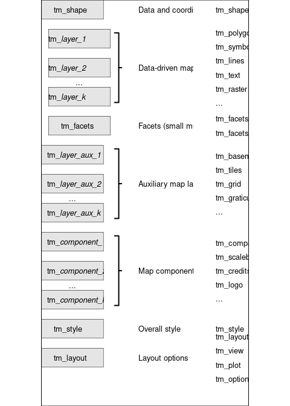

tmap is based on the Grammar of Graphics [1] in a similar way as ggplot2 [2].

Differences with ggplot2
- In ggplot2, the visual variables are defined on plot level (by default), but in tmap on layer level. This makes sense, since in non-spatial visualizations the x and y variables, the most important ones, are shared among the plot layers. However, in spatial visualizations the x and y variables are not considered data-driven but rather geometry-driven. The other visual variables, such as fill and border color, line width, and symbol shape.
- This also applies to the scale funtions: e.g. in ggplot2, the
scale_fill_continuous()is defined for the visual variable fill for the whole plot. In tmap, the scale functions are mapped 1 to 1 to the visual variables per layer:tm_polygons(fill = "my_var", fill.scale = tm_scale_continuous())
[1]
Leland. Wilkinson and G. Wills, The grammar of graphics, 2nd ed. in Statistics and computing. New York: Springer, 2005.
[2]
H. Wickham, ggplot2: Elegant graphics for data analysis. Springer-Verlag New York, 2016. Available: https://ggplot2.tidyverse.org